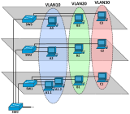
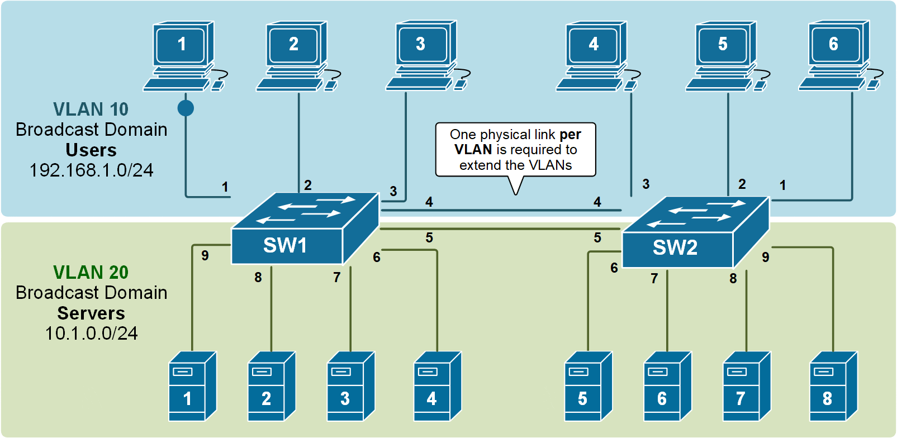
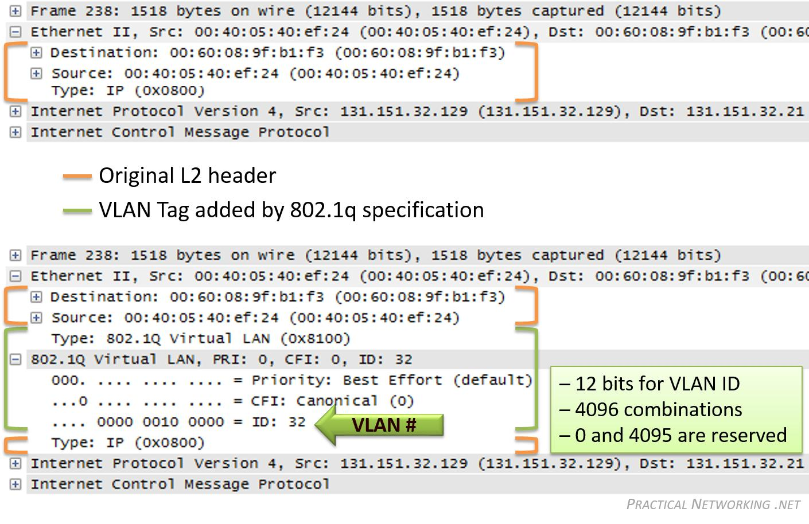
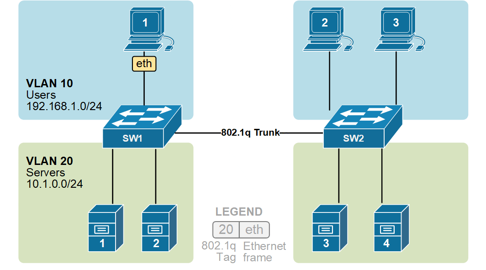
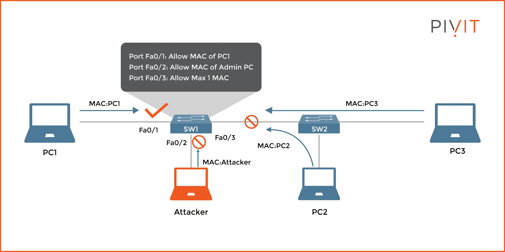
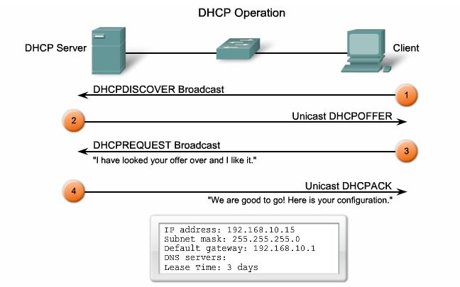

🚀 Guía Completa de Seguridad en Switches Cisco
📚 1. VLANs (Virtual Local Area Networks)
Concepto Teórico Detallado
¿Qué es una VLAN? Una VLAN es una red lógica independiente dentro de una red física. Imagina un edificio de oficinas donde cada departamento tiene su propio espacio privado aunque compartan el mismo edificio físico.
Problema que resuelve:
- Dominios de broadcast grandes: Sin VLANs, toda la red recibe tráfico broadcast
- Seguridad: Dispositivos en diferentes departamentos pueden comunicarse libremente
- Rendimiento: Tráfico innecesario en todos los puertos
Tipos de VLANs:
- VLAN de datos: Para usuarios finales
- VLAN de voz: Para tráfico VoIP (prioridad alta)
- VLAN de administración: Para gestión del switch
- VLAN nativa: Para tráfico sin etiquetar en trunks


¿Qué es un trunk?
Un trunk es un enlace de red que transporta múltiples VLANs simultáneamente entre switches o entre un switch y un router.*
Analogía para Entenderlo
# SIN TRUNK (Access Ports):
Cada VLAN = Carretera separada
Puerto access = Rampa de entrada/salida a UNA carretera
# CON TRUNK:
Trunk = Autopista con MÚLTIPLES carriles (cada carril = una VLAN)
Cada frame lleva "etiqueta" que dice a qué carril (VLAN) pertenece
Problema que Resuelve
# ESCENARIO SIN TRUNK:
Switch A (VLAN 10,20,30) --- Switch B (VLAN 10,20,30)
Necesitarías: 3 cables separados (uno por VLAN)
❌ Ineficiente ❌ Costoso ❌ No escalable
# ESCENARIO CON TRUNK:
Switch A (VLAN 10,20,30) ---[UN CABLE]--- Switch B (VLAN 10,20,30)
✅ Un solo cable transporta TODAS las VLANs
✅ Eficiente ✅ Escalable ✅ Flexible
🏗️ Cómo Funciona el Trunking Técnicamente
Protocolo 802.1Q (Dot1Q)

Ejemplo de Etiquetado


⚙️ Configuración de Trunks en Cisco
Comandos Básicos
! CONFIGURAR PUERTO COMO TRUNK
Switch(config)# interface gigabitethernet 0/1
Switch(config-if)# switchport mode trunk
! El puerto ahora transporta TODAS las VLANs
! LIMITAR VLANs PERMITIDAS EN EL TRUNK
Switch(config-if)# switchport trunk allowed vlan 10,20,30
! Solo estas VLANs pueden pasar por el trunk
! VERIFICACIÓN
Switch# show interfaces trunk
Port Mode Encapsulation Status Native vlan
Gi0/1 on 802.1q trunking 1
Port Vlans allowed on trunk
Gi0/1 10,20,30
Modos de Operación de Puertos
# SWITCHPORT MODE TRUNK → Forza trunk, negocia DTP
# SWITCHPORT MODE DYNAMIC DESIRABLE → Intenta formar trunk
# SWITCHPORT MODE DYNAMIC AUTO → Espera que otro inicie trunk
# SWITCHPORT MODE ACCESS → Solo una VLAN (no trunk)
🏷️ ¿Qué es la VLAN NATIVA?
Concepto Fundamental
La VLAN nativa es la única VLAN cuyos frames viajan SIN etiqueta 802.1Q a través de un trunk.
Propósito de la VLAN Nativa
# COMUNICACIÓN CON DISPOSITIVOS QUE NO ENTIENDEN 802.1Q
- Dispositivos legacy
- Algunos servidores
- Equipos de red antiguos
- Dispositivos que no soportan VLAN tagging
Comportamiento
# PARA TRÁFICO DE VLAN NATIVA:
Frame entra al trunk → NO se añade etiqueta 802.1Q
Frame sale del trunk → Se asume que pertenece a VLAN nativa
# PARA TRÁFICO DE OTRAS VLANs:
Frame entra al trunk → SE AÑADE etiqueta 802.1Q con VLAN ID
Frame sale del trunk → SE REMUEVE etiqueta, se envía a VLAN correcta
⚠️ IMPORTANTE: Consideraciones de Seguridad
Problema de Seguridad con VLAN Nativa
# ATAQUE DE SALTO DE VLAN (VLAN HOPPING)
Atacante puede:
1. Enviar frames etiquetados con VLAN nativa
2. Switch puede remover etiqueta y enviar a VLAN nativa
3. Posible acceso no autorizado a VLAN nativa
# SOLUCIÓN RECOMENDADA:
NUNCA usar VLAN 1 como nativa
Usar VLAN "basura" no utilizada para nativa
Configuración Segura
! CONFIGURACIÓN NO SEGURA (POR DEFECTO)
Switch(config-if)# switchport trunk native vlan 1
! ❌ VLAN 1 es default y puede tener dispositivos
! CONFIGURACIÓN SEGURA (RECOMENDADA)
Switch(config-if)# switchport trunk native vlan 999
Switch(config)# vlan 999
Switch(config-vlan)# name VLAN_BASURA_NATIVA
Switch(config-vlan)# exit
! ✅ VLAN 999 no tiene dispositivos, solo existe para tráfico nativo
🔧 Configuración Completa y Segura
Ejemplo Práctico Corporativo
! ESCENARIO: Empresa con 3 departamentos + VLAN de administración
! CREAR VLANs
Switch(config)# vlan 10
Switch(config-vlan)# name VENTAS
Switch(config-vlan)# vlan 20
Switch(config-vlan)# name IT
Switch(config-vlan)# vlan 30
Switch(config-vlan)# name CONTABILIDAD
Switch(config-vlan)# vlan 99
Switch(config-vlan)# name ADMIN
Switch(config-vlan)# vlan 999
Switch(config-vlan)# name NATIVA_SEGURA
Switch(config-vlan)# exit
! CONFIGURAR TRUNK SEGURO
Switch(config)# interface gigabitethernet 0/1
Switch(config-if)# description TRUNK_TO_CORE_SWITCH
Switch(config-if)# switchport mode trunk
Switch(config-if)# switchport trunk native vlan 999
Switch(config-if)# switchport trunk allowed vlan 10,20,30,99
! ✅ Solo las VLANs necesarias
! ✅ VLAN nativa segura (999)
! ✅ Explicítamente no permite VLAN 1
! CONFIGURAR EL OTRO EXTREMO (SWITCH CORE)
CoreSwitch(config)# interface gigabitethernet 0/1
CoreSwitch(config-if)# description TRUNK_TO_ACCESS_SWITCH
CoreSwitch(config-if)# switchport mode trunk
CoreSwitch(config-if)# switchport trunk native vlan 999
CoreSwitch(config-if)# switchport trunk allowed vlan 10,20,30,99
Configuración de Puertos de Acceso
! PUERTOS PARA USUARIOS (NO TRUNK)
Switch(config)# interface range fastethernet 0/1-8
Switch(config-if-range)# switchport mode access
Switch(config-if-range)# switchport access vlan 10
Switch(config-if-range)# description USUARIOS_VENTAS
Switch(config)# interface range fastethernet 0/9-16
Switch(config-if-range)# switchport mode access
Switch(config-if-range)# switchport access vlan 20
Switch(config-if-range)# description USUARIOS_IT
📊 Verificación y Troubleshooting
Comandos de Verificación
! VER ESTADO DE TRUNKS
Switch# show interfaces trunk
Port Mode Encapsulation Status Native vlan
Gi0/1 on 802.1q trunking 999
Gi0/2 auto 802.1q trunking 1
Port Vlans allowed on trunk
Gi0/1 10,20,30,99
Gi0/2 1-4094
! VER CONFIGURACIÓN DE INTERFAZ ESPECÍFICA
Switch# show interfaces gigabitethernet 0/1 switchport
Name: Gi0/1
Switchport: Enabled
Administrative Mode: trunk
Operational Mode: trunk
Administrative Trunking Encapsulation: dot1q
Operational Trunking Encapsulation: dot1q
Negotiation of Trunking: On
Access Mode VLAN: 1 (default)
Trunking Native Mode VLAN: 999 (VLAN_BASURA_NATIVA)
Trunking VLANs Enabled: 10,20,30,99
! VER ESTADÍSTICAS DE TRUNK
Switch# show interfaces gigabitethernet 0/1 trunk
Port Vlans allowed on trunk
Gi0/1 10,20,30,99
Port Vlans allowed and active in management domain
Gi0/1 10,20,30,99
Port Vlans in spanning tree forwarding state and not pruned
Gi0/1 10,20,30,99
Troubleshooting Común
# PROBLEMA 1: Trunk no se forma
CAUSA: Mismatch en configuración de trunk
SOLUCIÓN: Verificar que ambos lados estén en "switchport mode trunk"
# PROBLEMA 2: VLAN nativa mismatch
CAUSA: Diferente VLAN nativa en cada extremo
SÍNTOMA: Pérdida de conectividad para VLAN nativa
SOLUCIÓN: Configurar misma VLAN nativa en ambos extremos
# PROBLEMA 3: VLAN no permitida en trunk
CAUSA: VLAN no está en "allowed vlan list"
SÍNTOMA: Dispositivos en esa VLAN no pueden comunicarse through trunk
SOLUCIÓN: Añadir VLAN a la lista permitida
Resumen de Conceptos Clave
TRUNK:
✅ Transporta MÚLTIPLES VLANs en un solo enlace físico
✅ Usa etiquetado 802.1Q para identificar a qué VLAN pertenece cada frame
✅ Esencial para conectar switches en redes con múltiples VLANs
✅ Debe configurarse igual en ambos extremos del enlace
VLAN NATIVA:
✅ Única VLAN que viaja SIN etiqueta 802.1Q en un trunk
✅ Por defecto es VLAN 1 (❌ INSECURO)
✅ Mejor práctica: Usar VLAN no utilizada (ej: 999)
✅ Debe coincidir en ambos extremos del trunk
MEJORES PRÁCTICAS:
1. ✅ NUNCA usar VLAN 1 para nada
2. ✅ Usar VLAN dedicada no utilizada como nativa (999, 4094, etc.)
3. ✅ Limitar VLANs permitidas en trunk solo a las necesarias
4. ✅ Deshabilitar puertos no utilizados
5. ✅ Configurar manualmente trunks en lugar de usar auto-negotiation
6. ✅ Documentar configuración de trunks
Comandos Explicados Paso a Paso
! CREACIÓN DE VLANs
Switch# configure terminal
Switch(config)# vlan 10
! El comando 'vlan 10' crea o entra en la configuración de la VLAN 10
! Las VLANs 1-1005 son estándar, 1006-4094 son extendidas
Switch(config-vlan)# name VENTAS
! 'name' asigna un nombre descriptivo para identificar la VLAN fácilmente
Switch(config-vlan)# exit
! Sale del modo de configuración de VLAN
! ASIGNACIÓN DE PUERTOS A VLANs
Switch(config)# interface fastethernet 0/1
! Selecciona el puerto físico para configurar
Switch(config-if)# switchport mode access
! 'switchport mode access' configura el puerto como acceso (solo una VLAN)
! Esto significa que el dispositivo conectado no espera etiquetas VLAN
Switch(config-if)# switchport access vlan 10
! Asigna el puerto específicamente a la VLAN 10
! El dispositivo conectado estará en la red lógica de VENTAS
! CONFIGURACIÓN DE PUERTOS TRUNK
Switch(config)# interface gigabitethernet 0/1
Switch(config-if)# switchport mode trunk
! 'switchport mode trunk' configura el puerto para transportar múltiples VLANs
! Los trunks usan etiquetas 802.1Q para identificar a qué VLAN pertenece cada frame
Switch(config-if)# switchport trunk native vlan 999
! 'native vlan' define qué VLAN viaja sin etiquetar
! Por seguridad, NUNCA usar VLAN 1 como nativa
Switch(config-if)# switchport trunk allowed vlan 10,20,30
! 'allowed vlan' especifica qué VLANs pueden pasar por el trunk
! Esto proporciona control granular sobre qué VLANs se propagan
! VERIFICACIÓN
Switch# show vlan brief
! Muestra todas las VLANs y qué puertos están asignados a cada una
Switch# show interfaces trunk
! Muestra información detallada sobre puertos trunk
Ejemplo Práctico Completo
! ESCENARIO: Empresa con 3 departamentos
Switch(config)# vlan 10
Switch(config-vlan)# name VENTAS
Switch(config-vlan)# exit
Switch(config)# vlan 20
Switch(config-vlan)# name IT
Switch(config-vlan)# exit
Switch(config)# vlan 30
Switch(config-vlan)# name CONTABILIDAD
Switch(config-vlan)# exit
Switch(config)# vlan 99
Switch(config-vlan)# name ADMINISTRACION
Switch(config-vlan)# exit
! Asignar puertos a departamentos
Switch(config)# interface range fastethernet 0/1-8
Switch(config-if-range)# switchport mode access
Switch(config-if-range)# switchport access vlan 10
Switch(config-if-range)# description PUERTOS_VENTAS
Switch(config)# interface range fastethernet 0/9-16
Switch(config-if-range)# switchport mode access
Switch(config-if-range)# switchport access vlan 20
Switch(config-if-range)# description PUERTOS_IT
! Configurar IP de gestión en VLAN de administración
Switch(config)# interface vlan 99
Switch(config-if)# ip address 192.168.99.10 255.255.255.0
Switch(config-if)# no shutdown
! Esto permite administrar el switch remotamente mediante SSH/Telnet
2. Port Security
Concepto Teórico Detallado
¿Qué es Port Security? Es un mecanismo que restringe qué dispositivos pueden conectarse a un puerto del switch basándose en direcciones MAC.

Problemas que resuelve:
- Conectividad no autorizada: Evita que usuarios conecten dispositivos no autorizados
- Ataques MAC flooding: Previene que atacantes saturen la tabla MAC
- Robo de puertos: Impide usar puertos físicos para acceso no autorizado
Mecanismos de aprendizaje de MAC:
- Estáticas: Se configuran manualmente
- Dinámicas: El switch aprende automáticamente
- Sticky: Combina ambos - aprende y luego las hace estáticas
Comandos Explicados Paso a Paso
! HABILITAR PORT SECURITY BÁSICO
Switch(config)# interface fastethernet 0/1
Switch(config-if)# switchport mode access
! PRIMERO debe ser puerto de acceso para habilitar port security
Switch(config-if)# switchport port-security
! Este comando ACTIVA la funcionalidad de port security en el puerto
! Sin esto, los demás comandos de port security no funcionarán
Switch(config-if)# switchport port-security maximum 2
! 'maximum' define el número máximo de direcciones MAC permitidas
! En este caso, permite hasta 2 dispositivos diferentes
! TIPOS DE VIOLACIÓN - CRÍTICOS PARA ENTENDER
Switch(config-if)# switchport port-security violation shutdown
! 'violation shutdown' - EL MÁS SEGURO
! - Cierra el puerto inmediatamente
! - Lo coloca en estado err-disable
! - Requiere intervención manual para reactivar
! - USAR EN ENTORNOS DE ALTA SEGURIDAD
Switch(config-if)# switchport port-security violation restrict
! 'violation restrict' - MODO INTERMEDIO
! - Permite tráfico de MACs conocidas
! - Bloquea tráfico de MACs no autorizadas
! - Genera logs pero mantiene el puerto activo
! - BUENO para monitoreo sin interrumpir servicio
Switch(config-if)# switchport port-security violation protect
! 'violation protect' - MODO MENOS RESTRICTIVO
! - Solo bloquea frames de MACs no autorizadas
! - No genera logs de violación
! - PUEDE PASAR DESAPERCIBIDO UN ATAQUE
! MÉTODOS DE APRENDIZAJE DE MAC
Switch(config-if)# switchport port-security mac-address sticky
! 'sticky' - EL MÁS PRÁCTICO
! - Aprende las MACs que se conectan inicialmente
! - Las convierte en direcciones estáticas automáticamente
! - Se guardan en la configuración
! - Perfecto para despliegues iniciales
Switch(config-if)# switchport port-security mac-address 0000.1111.2222
! Configuración MANUAL de MAC específica
! Útil para dispositivos críticos como impresoras o servidores
! CONFIGURACIONES AVANZADAS
Switch(config-if)# switchport port-security aging time 120
! 'aging time' define cuánto tiempo se mantiene una MAC en la tabla
! 120 minutos = 2 horas
Switch(config-if)# switchport port-security aging type inactivity
! 'inactivity' significa que el temporizador corre solo si no hay tráfico
! Alternativa: 'absolute' (tiempo fijo independiente del tráfico)
Ejemplo Práctico Completo
! ESCENARIO: Oficina con políticas de seguridad específicas
! Puerto para impresora (1 dispositivo fijo)
Switch(config)# interface fastethernet 0/5
Switch(config-if)# switchport mode access
Switch(config-if)# switchport access vlan 10
Switch(config-if)# switchport port-security
Switch(config-if)# switchport port-security maximum 1
Switch(config-if)# switchport port-security violation shutdown
Switch(config-if)# switchport port-security mac-address 0050.56AB.CDEF
Switch(config-if)# description IMPRESORA_SALA_VENTAS
! Puerto para usuarios generales (hasta 3 dispositivos)
Switch(config)# interface fastethernet 0/10
Switch(config-if)# switchport mode access
Switch(config-if)# switchport access vlan 20
Switch(config-if)# switchport port-security
Switch(config-if)# switchport port-security maximum 3
Switch(config-if)# switchport port-security violation restrict
Switch(config-if)# switchport port-security mac-address sticky
Switch(config-if)# switchport port-security aging time 240
Switch(config-if)# description PUESTO_TRABAJO_USUARIO
! Configurar recuperación automática de err-disable
Switch(config)# errdisable recovery cause psecure-violation
Switch(config)# errdisable recovery interval 300
! Esto reactiva automáticamente puertos después de 5 minutos
! VERIFICACIÓN DETALLADA
Switch# show port-security
! Muestra resumen de todos los puertos con port security
Switch# show port-security interface fastethernet 0/10
! Muestra detalles específicos del puerto:
! - Máximo de direcciones permitidas
! - Direcciones actualmente aprendidas
! - Contador de violaciones
! - Tipo de violación configurado
Switch# show port-security address
! Muestra la tabla de direcciones MAC seguras aprendidas
3. DHCP Snooping
¿Pero qué es DHCP?
¿Qué es DHCP?
DHCP (Dynamic Host Configuration Protocol) es el "servicio de entrega de direcciones" automático de las redes. En lugar de configurar manualmente cada dispositivo, DHCP asigna automáticamente:
- ✅ Dirección IP
- ✅ Máscara de subred
- ✅ Gateway por defecto
- ✅ Servidores DNS
El Proceso de 4 Pasos (DORA)
1.DISCOVER - "¿Hay algún servidor DHCP?"
- El cliente envía broadcast sin IP - Todos los dispositivos en la red local lo reciben2.OFFER - "Sí, te ofrezco esta IP"
- Servidor reserva una IP disponible - Envía oferta con configuración de red3.REQUEST - "Acepto tu oferta"
- Cliente confirma que acepta la IP - Se hace por broadcast por si hay múltiples servidores4.ACK - "Confirmado, usa esta IP"
- Confirmación final del servidor - Incluye tiempo de arrendamiento (lease time)Renovación de IP
# A LOS 50% DEL TIEMPO DE ARRENDAMIENTO:
Cliente → Servidor: "¿Puedo seguir usando esta IP?"
Servidor → Cliente: "Sí, renuevas por X tiempo más"
# SI NO HAY RESPUESTA, INTENTA DE NUEVO AL 87.5%
# SI EXPIRA → VUELVE AL PASO 1 (DISCOVER)

En Resumen
DHCP = Sistema automático que evita tener que configurar manualmente cada dispositivo en la red, asignando y gestionando direcciones IP de forma dinámica.
Funciona como un "alquiler de direcciones" con renovación automática.
¿Qué es DHCP Snooping?
La función exacta de DHCP Snooping es actuar como un guardián de seguridad que previene ataques DHCP maliciosos mediante la creación de una base de datos confiable de asignaciones IP-MAC, diferenciando entre puertos trusted (donde se conectan servidores DHCP legítimos) y untrusted (clientes), bloqueando respuestas DHCP no autorizadas y proporcionando la base de datos que tecnologías como DAI e IP Source Guard utilizan para validar la legitimidad del tráfico ARP y las direcciones IP en la red.
En esencia: DHCP Snooping es el sistema de verificación de identidades que asegura que solo dispositivos autorizados puedan ofrecer direcciones IP y mantiene un registro confiable de qué dispositivo tiene qué IP en qué puerto. DHCP Snooping es la BASE, DAI es la CAPA DE SEGURIDAD que usa esa base
Analogía para Entenderlo
Imagina un edificio con: - Servidores DHCP legítimos = Oficinas de administración autorizadas - Clientes DHCP = Inquilinos que necesitan llaves (IPs) - Ataque DHCP Rogue = Alguien fingiendo ser la administración - DHCP Snooping = El sistema de seguridad que verifica credenciales


🔍 Problemas que Resuelve DHCP Snooping
1. Ataque DHCP Starvation (Inanición)
# Un atacante envía MÚLTIPLES solicitudes DHCP con MACs falsas
# Resultado: Agota el pool de IPs del servidor legítimo
# Clientes legítimos no pueden obtener IP
2. Ataque DHCP Rogue (Servidor Falso)
# Atacante configura servidor DHCP no autorizado
# Ofrece IPs con:
# - Gateway falso (el atacante)
# - DNS falso (para redirigir tráfico)
# Resultado: Man-in-the-Middle completo
3. IP Spoofing (Suplantación de IP)
# Clientes usan IPs que no les corresponden
# Difícil de rastrear en la red
# Puede eludir controles de seguridad basados en IP
🏗️ Arquitectura de DHCP Snooping
Componentes Clave
-
Puertos Trusted (Confiables)
- Donde están los servidores DHCP legítimos
- Aceptan mensajes DHCP de cualquier tipo
-
Puertos Untrusted (No Confiables)
- Donde se conectan clientes
- Solo aceptan solicitudes DHCP (DISCOVER, REQUEST)
- Rechazan respuestas DHCP (OFFER, ACK)
-
Binding Database (Base de Datos de Asignaciones)
- Almacena: MAC + IP + VLAN + Puerto + Tiempo de arrendamiento
- Se usa por DAI y IP Source Guard
⚙️ Configuración Detallada Paso a Paso
Configuración Básica
! PASO 1: HABILITAR DHCP SNOOPING GLOBALMENTE
Switch(config)# ip dhcp snooping
! Este comando ACTIVA la funcionalidad a nivel global
! Sin esto, nada de DHCP Snooping funcionará
! PASO 2: ESPECIFICAR VLANs DONDE ACTUARÁ
Switch(config)# ip dhcp snooping vlan 10,20,30
! Solo las VLANs especificadas estarán protegidas
! Puedes usar rangos: vlan 1-100
! PASO 3: CONFIGURAR PUERTOS TRUSTED
Switch(config)# interface gigabitethernet 0/1
Switch(config-if)# description SERVIDOR_DHCP_LEGITIMO
Switch(config-if)# ip dhcp snooping trust
! MARCA este puerto como confiable para respuestas DHCP
! Los servidores DHCP legítimos DEBEN estar en puertos trusted
! PASO 4: PUERTOS UNTRUSTED (POR DEFECTO)
Switch(config)# interface range fastethernet 0/1-24
Switch(config-if-range)# no ip dhcp snooping trust
! Explícitamente los marca como no confiables
! Aunque por defecto ya lo son, es buena práctica
Configuración Avanzada
! OPCIÓN 82 (AGENT INFORMATION OPTION)
Switch(config)# ip dhcp snooping information option
! Añade información sobre el switch y puerto donde se originó la solicitud
! Ayuda a los servidores DHCP a tomar decisiones basadas en ubicación
! LIMITAR TASA DE MENSAJES DHCP
Switch(config)# interface fastethernet 0/5
Switch(config-if)# ip dhcp snooping limit rate 10
! Limita a 10 mensajes DHCP por segundo
! Previene ataques de inundación (DHCP starvation)
! CONFIGURACIÓN DE LA BASE DE DATOS
Switch(config)# ip dhcp snooping database flash:dhcp-snooping.txt
Switch(config)# ip dhcp snooping database write-delay 15
! Guarda la base de datos en memoria flash cada 15 segundos
! Previene pérdida de información en reinicios
🔧 Ejemplos Prácticos de Configuración
Ejemplo 1: Pequeña Oficina
! ESCENARIO: 1 servidor DHCP, 24 puertos de usuario
Switch(config)# ip dhcp snooping
Switch(config)# ip dhcp snooping vlan 10
! Servidor DHCP en puerto Gigabit 0/1
Switch(config)# interface gigabitethernet 0/1
Switch(config-if)# description SERVIDOR_DHCP
Switch(config-if)# ip dhcp snooping trust
! Puertos de usuarios (untrusted por defecto)
Switch(config)# interface range fastethernet 0/1-24
Switch(config-if-range)# switchport mode access
Switch(config-if-range)# switchport access vlan 10
Switch(config-if-range)# ip dhcp snooping limit rate 5
! Limita a 5 mensajes/segundo para prevenir ataques
Ejemplo 2: Empresa Mediana con Múltiples VLANs
! ESCENARIO: Múltiples departamentos, servidor centralizado
Switch(config)# ip dhcp snooping
Switch(config)# ip dhcp snooping vlan 10,20,30,99
Switch(config)# ip dhcp snooping information option
! Uplink al core donde está el servidor DHCP
Switch(config)# interface gigabitethernet 0/1
Switch(config-if)# description UPLINK_TO_CORE
Switch(config-if)# switchport mode trunk
Switch(config-if)# ip dhcp snooping trust
! VLAN de Ventas
Switch(config)# interface range fastethernet 0/1-8
Switch(config-if-range)# switchport access vlan 10
Switch(config-if-range)# ip dhcp snooping limit rate 8
! VLAN de IT
Switch(config)# interface range fastethernet 0/9-16
Switch(config-if-range)# switchport access vlan 20
Switch(config-if-range)# ip dhcp snooping limit rate 8
! VLAN de Administración
Switch(config)# interface range fastethernet 0/17-24
Switch(config-if-range)# switchport access vlan 99
Switch(config-if-range)# ip dhcp snooping limit rate 8
Ejemplo 3: Entorno de Alta Seguridad
! ESCENARIO: Entorno crítico con verificación estricta
Switch(config)# ip dhcp snooping
Switch(config)# ip dhcp snooping vlan 1-100
Switch(config)# ip dhcp snooping information option
Switch(config)# ip dhcp snooping verify mac-address
! VERIFICA que la MAC origen en DHCP sea la real del cliente
! Previene suplantación de MAC en mensajes DHCP
! Base de datos persistente
Switch(config)# ip dhcp snooping database flash:dhcp-snooping.db
Switch(config)# ip dhcp snooping database timeout 10
Switch(config)# ip dhcp snooping database write-delay 10
! Puertos trusted explícitos
Switch(config)# interface range gigabitethernet 0/1-2
Switch(config-if-range)# description SERVERS_DHCP_TRUSTED
Switch(config-if-range)# ip dhcp snooping trust
! Todos los demás puertos son untrusted con rate limiting estricto
Switch(config)# interface range fastethernet 0/1-48
Switch(config-if-range)# no ip dhcp snooping trust
Switch(config-if-range)# ip dhcp snooping limit rate 5
! Solo 5 mensajes DHCP por segundo - muy restrictivo
🛠️ Integración con Otras Tecnologías de Seguridad
Con Dynamic ARP Inspection (DAI)
! DHCP Snooping es PRERREQUISITO para DAI
Switch(config)# ip dhcp snooping
Switch(config)# ip dhcp snooping vlan 10
! DAI usa la tabla de bindings de DHCP Snooping
Switch(config)# ip arp inspection vlan 10
Switch(config)# ip arp inspection validate src-mac dst-mac ip
! DAI verifica que las respuestas ARP coincidan con la tabla de DHCP Snooping
Con IP Source Guard
! IP Source Guard también depende de DHCP Snooping
Switch(config)# ip dhcp snooping
Switch(config)# ip dhcp snooping vlan 10
Switch(config)# interface fastethernet 0/1
Switch(config-if)# ip verify source
! Solo permite tráfico de IPs que están en la tabla de DHCP Snooping
📊 Comandos de Verificación y Monitoreo
Verificación Básica
! VER ESTADO GLOBAL DE DHCP SNOOPING
Switch# show ip dhcp snooping
Switch DHCP snooping is enabled
DHCP snooping is configured on following VLANs:
10,20,30
DHCP snooping is operational on following VLANs:
10,20,30
DHCP snooping is configured on the following L3 Interfaces:
Insertion of option 82 is enabled
circuit-id default format: vlan-mod-port
remote-id: 0050.5689.ABCD (MAC del switch)
Option 82 on untrusted port is not allowed
Verification of hwaddr field is enabled
! MOSTRAR LA TABLA DE BINDINGS
Switch# show ip dhcp snooping binding
MacAddress IpAddress Lease(sec) Type VLAN Interface
------------------ --------------- ---------- ------------- ---- --------------------
00:50:56:89:AB:CD 192.168.10.10 86400 dhcp-snooping 10 FastEthernet0/1
00:50:56:89:AB:CE 192.168.10.11 86320 dhcp-snooping 10 FastEthernet0/2
00:50:56:89:AB:CF 192.168.20.15 86200 dhcp-snooping 20 FastEthernet0/9
! VER ESTADO DE PUERTOS TRUSTED
Switch# show ip dhcp snooping trust
Trusted | Port |
------- | ---- |
yes | Gi0/1 |
no | Fa0/1 |
no | Fa0/2 |
... | ... |
Estadísticas y Troubleshooting
! ESTADÍSTICAS DETALLADAS POR INTERFAZ
Switch# show ip dhcp snooping interface fastethernet 0/1
DHCP Snooping is enabled on this interface
DHCP Snooping trust is disabled
DHCP Snooping limit rate is 5 packets per second
DHCP Snooping violation count is 0
! CONTADORES DE MENSAJES DHCP
Switch# show ip dhcp snooping statistics
DHCP Snooping Statistics:
Packets Dropped:
DHCP Discover: 0
DHCP Offer: 15
DHCP Request: 0
DHCP Ack: 12
Others: 3
Total Packets Dropped: 30
! VERIFICAR LA BASE DE DATOS
Switch# show ip dhcp snooping database
Agent URL : flash:dhcp-snooping.db
Write delay : 15 seconds
Abort delay : 300 seconds
Agent running : No
Delay timer : not running
Reconfigure timer : not running
Last succeeded : Never
Last failed : Never
Comandos de Depuración (Debug)
! SOLO USAR EN TROUBLESHOOTING - PUEDE GENERAR MUCHO OUTPUT
Switch# debug ip dhcp snooping events
DHCP_SNOOPING: received new DHCP packet from interface FastEthernet0/1
DHCP_SNOOPING: process new DHCP packet, message type: DHCPDISCOVER
DHCP_SNOOPING: packet passed validation check
Switch# debug ip dhcp snooping packet
DHCP_SNOOPING: received packet on FastEthernet0/1:
OP: 1, HTYPE: 1, HLEN: 6, HOPS: 0
XID: 0x45A3F1C2, SECS: 0, FLAGS: 0
CIADDR: 0.0.0.0, YIADDR: 0.0.0.0, SIADDR: 0.0.0.0, GIADDR: 0.0.0.0
CHADDR: 0050.5689.ABCD
🔄 Flujo de Trabajo Completo de DHCP Snooping
Proceso Paso a Paso
-
Inicialización:
-
Aprendizaje:
Cliente conecta en Fa0/1 (untrusted) Envía DHCP DISCOVER → Switch permite (solicitud) Servidor legítimo en Gi0/1 (trusted) envía DHCP OFFER → Switch permite (trusted) Cliente envía DHCP REQUEST → Switch permite Servidor envía DHCP ACK → Switch permite (trusted) Switch añade binding a la tabla: MAC + IP + VLAN + Puerto -
Protección:
-
Mantenimiento:
💡 Mejores Prácticas y Recomendaciones
Configuración Recomendada
! CONFIGURACIÓN ÓPTIMA PARA ENTORNOS CORPORATIVOS
Switch(config)# ip dhcp snooping
Switch(config)# ip dhcp snooping vlan [TODAS_LAS_VLANs_CON_CLIENTES]
Switch(config)# ip dhcp snooping information option
Switch(config)# ip dhcp snooping verify mac-address
Switch(config)# ip dhcp snooping database flash:dhcp-snooping.db
Switch(config)# ip dhcp snooping database write-delay 15
! PUERTOS TRUSTED - SOLO DONDE HAY SERVIDORES DHCP LEGÍTIMOS
Switch(config)# interface [PUERTOS_A_SERVIDORES_DHCP]
Switch(config-if)# ip dhcp snooping trust
! PUERTOS UNTRUSTED - TODOS LOS DEMÁS
Switch(config)# interface range [TODOS_LOS_PUERTOS_DE_CLIENTES]
Switch(config-if-range)# no ip dhcp snooping trust
Switch(config-if-range)# ip dhcp snooping limit rate 10
Consideraciones Importantes
-
Planificación:
- Implementar en ventana de mantenimiento
- Comenzar en VLANs de prueba
- Tener rollback plan
-
Rendimiento:
- Rate limiting muy bajo puede afectar clientes legítimos
- Base de datos grande puede consumir memoria
-
Compatibilidad:
- Verificar que dispositivos legados funcionen
- Algunos dispositivos IoT pueden tener comportamientos DHCP extraños
-
Monitoreo:
- Configurar SNMP traps para violaciones
- Monitorear contadores de paquetes descartados
- Revisar logs regularmente
🎯 Resumen Final
DHCP Snooping es la base fundamental para:
- ✅ Prevenir servidores DHCP no autorizados
- ✅ Construir la tabla de bindings para DAI e IP Source Guard
- ✅ Detectar y prevenir ataques de inundación DHCP
- ✅ Mejorar la trazabilidad de dispositivos en la red
Sin DHCP Snooping, las demás tecnologías de seguridad (DAI, IP Source Guard) no pueden funcionar correctamente.
🛡️ 3. Dynamic ARP Inspection (DAI)
Concepto Teórico Detallado
¿Qué es DAI? Es un mecanismo de seguridad que previene ataques ARP spoofing validando paquetes ARP en la red.
Problema del ARP:
- ARP no tiene autenticación → Cualquiera puede enviar respuestas ARP
- ARP poisoning: Atacante se hace pasar por el gateway
- Man-in-the-middle: Intercepta tráfico entre víctima y gateway
Cómo funciona DAI:
- Intercepta todos los paquetes ARP
- Valida contra base de datos confiable (DHCP Snooping)
- Descarta paquetes ARP no válidos
- Registra intentos de violación
DAI utiliza la tabla de DHCP Snooping EXCLUSIVAMENTE cuando recibe un ARP Response (Respuesta ARP)
Comandos Explicados Paso a Paso
! CONFIGURACIÓN BÁSICA DE DAI
Switch(config)# ip arp inspection vlan 10,20
! Habilita DAI para las VLANs especificadas
! Sin este comando, DAI no está activo en ninguna VLAN
! DEFINIR PUERTOS TRUSTED (CONFIABLES)
Switch(config)# interface gigabitethernet 0/1
Switch(config-if)# ip arp inspection trust
! Los puertos 'trusted' NO son inspeccionados por DAI
! USAR SOLO en: routers, servidores, switches superiores
! NUNCA en puertos de usuarios finales
! VALIDACIONES ESPECÍFICAS
Switch(config)# ip arp inspection validate src-mac dst-mac ip
! 'src-mac' - Verifica que MAC origen en ARP = MAC origen en Ethernet
! 'dst-mac' - Verifica que MAC destino en ARP = MAC destino en Ethernet
! 'ip' - Verifica direcciones IP válidas (no 0.0.0.0, 255.255.255.255, etc.)
! RATE LIMITING - CRÍTICO PARA PREVENIR DOS
Switch(config)# interface fastethernet 0/5
Switch(config-if)# ip arp inspection limit rate 15
! Limita a 15 paquetes ARP por segundo
! Paquetes excedentes son descartados
! Previene flood de ARP que podría saturar la CPU
Configuración Integrada con DHCP Snooping
! PRIMERO: Configurar DHCP Snooping (requisito para DAI)
Switch(config)# ip dhcp snooping
! Habilita la funcionalidad global de DHCP Snooping
Switch(config)# ip dhcp snooping vlan 10,20
! Especifica en qué VLANs actuará DHCP Snooping
Switch(config)# interface gigabitethernet 0/1
Switch(config-if)# ip dhcp snooping trust
! Puertos trusted para DHCP (hacia servidores DHCP legítimos)
! SEGUNDO: Configurar DAI que usa la tabla de DHCP Snooping
Switch(config)# ip arp inspection vlan 10,20
! DAI usará la tabla de bindings de DHCP Snooping para validar
Switch(config)# ip arp inspection log-buffer entries 1024
! Buffer para almacenar logs de violaciones ARP
Switch(config)# ip arp inspection log-buffer logs 10 interval 60
! Genera logs cada 60 segundos si hay más de 10 violaciones
! CONFIGURACIÓN POR PUERTO DE USUARIO
Switch(config)# interface range fastethernet 0/1-24
Switch(config-if-range)# switchport mode access
Switch(config-if-range)# ip arp inspection limit rate 10
! Todos los puertos de usuario tienen rate limiting
! Por defecto son untrusted (inspeccionados)
Ejemplo Práctico Completo
! ESCENARIO: Red corporativa con múltiples VLANs
! 1. Configurar DHCP Snooping
Switch(config)# ip dhcp snooping
Switch(config)# ip dhcp snooping vlan 10,20,30
Switch(config)# ip dhcp snooping information option
! 'information option' añade información adicional (option 82)
! 2. Definir puertos trusted
Switch(config)# interface gigabitethernet 0/1
Switch(config-if)# description UPLINK_TO_CORE_SWITCH
Switch(config-if)# ip dhcp snooping trust
Switch(config-if)# ip arp inspection trust
Switch(config)# interface gigabitethernet 0/2
Switch(config-if)# description LINK_TO_DHCP_SERVER
Switch(config-if)# ip dhcp snooping trust
Switch(config-if)# ip arp inspection trust
! 3. Configurar DAI
Switch(config)# ip arp inspection vlan 10,20,30
Switch(config)# ip arp inspection validate src-mac dst-mac ip
Switch(config)# ip arp inspection log-buffer entries 2048
! 4. Configurar puertos de usuario
Switch(config)# interface range fastethernet 0/1-48
Switch(config-if-range)# switchport mode access
Switch(config-if-range)# ip arp inspection limit rate 15
Switch(config-if-range)# no ip dhcp snooping trust
! Explícitamente configurados como untrusted
! VERIFICACIÓN
Switch# show ip arp inspection
! Muestra configuración global de DAI
Switch# show ip arp inspection statistics
! Muestra contadores de paquetes procesados y descartados
Switch# show ip dhcp snooping binding
! Muestra la tabla de bindings IP-MAC-puerto
! ESTA TABLA ES LA QUE USA DAI PARA VALIDAR
Switch# show ip arp inspection interface fastethernet 0/10
! Muestra estadísticas específicas por puerto
🌉 4. BPDU Guard & BPDU Filter
Concepto Teórico Detallado
¿Qué son las BPDUs? BPDU (Bridge Protocol Data Units) son mensajes que intercambian los switches para construir y mantener el spanning-tree.
Problemas que resuelven:
- Switches no autorizados: Usuario conecta un switch casero
- Bucles de red: Configuraciones incorrectas crean loops
- Interrupciones de servicio: Topología STP cambia inesperadamente
BPDU Guard - Explicación Detallada
Propósito: Proteger puertos de acceso contra recepción de BPDUs
Comportamiento: - Si recibe BPDU → err-disable inmediato - Ideal para puertos con usuarios finales - Se activa solo en puertos con PortFast
Comandos BPDU Guard
! MÉTODO 1: Global (recomendado para consistencia)
Switch(config)# spanning-tree portfast bpduguard default
! Aplica BPDU Guard automáticamente a TODOS los puertos con PortFast
! MÉTODO MÁS EFICIENTE para despliegues grandes
! MÉTODO 2: Por interfaz
Switch(config)# interface fastethernet 0/1
Switch(config-if)# spanning-tree portfast
! PortFast salta estados temporales (listening/learning)
Switch(config-if)# spanning-tree bpduguard enable
! Habilita BPDU Guard específicamente en este puerto
! RECUPERACIÓN AUTOMÁTICA
Switch(config)# errdisable recovery cause bpduguard
Switch(config)# errdisable recovery interval 300
! Reactiva puertos automáticamente después de 5 minutos
BPDU Filter - Explicación Detallada
Propósito: Silenciar BPDUs en puertos específicos
Comportamiento:
- Bloquea envío y recepción de BPDUs
- Peligroso: Puede crear bucles si no se usa correctamente
- Caso de uso: Conectar dispositivos que envían BPDUs pero no deben participar en STP
Comandos BPDU Filter
! MÉTODO 1: Global
Switch(config)# spanning-tree portfast bpdufilter default
! Aplica BPDU Filter a todos los puertos con PortFast
! CUIDADO: Puede causar bucles si se conecta un switch
! MÉTODO 2: Por interfaz
Switch(config)# interface fastethernet 0/2
Switch(config-if)# spanning-tree bpdufilter enable
! Habilita BPDU Filter específicamente en este puerto
Ejemplo Práctico: Cuándo Usar Cada Uno
! ESCENARIO: Oficina con diferentes tipos de puertos
! 1. Puertos de usuario normal - USAR BPDU GUARD
Switch(config)# interface range fastethernet 0/1-20
Switch(config-if-range)# switchport mode access
Switch(config-if-range)# spanning-tree portfast
Switch(config-if-range)# spanning-tree bpduguard enable
Switch(config-if-range)# description USUARIOS_FINALES
! Si alguien conecta un switch, el puerto se desactiva
! 2. Servidor que envía BPDUs - USAR BPDU FILTER
Switch(config)# interface fastethernet 0/21
Switch(config-if)# switchport mode access
Switch(config-if)# spanning-tree bpdufilter enable
Switch(config-if)# description SERVIDOR_VMWARE
! El servidor puede enviar BPDUs pero no queremos que participe en STP
! 3. Configuración global de seguridad
Switch(config)# spanning-tree portfast bpduguard default
! Para todos los nuevos puertos con PortFast
Switch(config)# errdisable recovery cause bpduguard
Switch(config)# errdisable recovery interval 600
! Recuperación automática después de 10 minutos
! VERIFICACIÓN
Switch# show spanning-tree summary
! Muestra estado global de spanning-tree incluyendo BPDU Guard/Filter
Switch# show spanning-tree interface fastethernet 0/1 detail
! Muestra configuración específica de BPDU Guard/Filter por puerto
Switch# show errdisable recovery
! Muestra configuración de recuperación automática
🔍 5. IP Source Guard
Concepto Teórico Detallado
¿Qué es IP Source Guard? Es un mecanismo que filtra tráfico IP basándose en la tabla de bindings de DHCP Snooping.
Problemas que resuelve:
- IP spoofing: Usuario usa IP que no le pertenece
- Ataques DoS: Dispositivos maliciosos suplantando IPs
- Robo de servicios: Usar IPs de otros departamentos
Cómo funciona:
- Aprende bindings IP-MAC de DHCP Snooping
- Instala filtros en hardware del switch
- Permite solo tráfico de IPs autorizadas
- Actualiza dinámicamente cuando expiran leases DHCP
Comandos Explicados Paso a Paso
! PRERREQUISITO: DHCP Snooping debe estar configurado
Switch(config)# ip dhcp snooping
Switch(config)# ip dhcp snooping vlan 10
! CONFIGURACIÓN BÁSICA DE IP SOURCE GUARD
Switch(config)# interface fastethernet 0/1
Switch(config-if)# ip verify source
! Habilita verificación de dirección IP origen
! Solo permite tráfico de IPs que están en la tabla de DHCP Snooping
! CONFIGURACIÓN AVANZADA CON VERIFICACIÓN MAC
Switch(config-if)# ip verify source port-security
! 'port-security' añade verificación de dirección MAC también
! Más seguro pero requiere que Port Security esté configurado
Switch(config-if)# ip verify source vlan dhcp-snooping port-security
! Verificación completa: IP + MAC + VLAN
! MÁXIMA SEGURIDAD pero más complejo de implementar
Ejemplo Práctico Completo
! ESCENARIO: Red segura con validación múltiple
! 1. CONFIGURAR DHCP SNOOPING (BASE PARA TODO)
Switch(config)# ip dhcp snooping
Switch(config)# ip dhcp snooping vlan 10,20
Switch(config)# ip dhcp snooping information option
! Definir puertos trusted
Switch(config)# interface gigabitethernet 0/1
Switch(config-if)# ip dhcp snooping trust
Switch(config-if)# description TO_DHCP_SERVER
! 2. CONFIGURAR PORT SECURITY
Switch(config)# interface range fastethernet 0/1-24
Switch(config-if-range)# switchport mode access
Switch(config-if-range)# switchport port-security
Switch(config-if-range)# switchport port-security maximum 2
Switch(config-if-range)# switchport port-security violation restrict
Switch(config-if-range)# switchport port-security mac-address sticky
! 3. CONFIGURAR IP SOURCE GUARD
Switch(config)# interface range fastethernet 0/1-24
Switch(config-if-range)# ip verify source port-security
! Verifica tanto IP como dirección MAC
! Solo permite tráfico de dispositivos con binding válido
! 4. CONFIGURACIÓN ALTERNATIVA PARA DISPOSITIVOS ESTÁTICOS
Switch(config)# interface fastethernet 0/25
Switch(config-if)# description SERVIDOR_ESTATICO
Switch(config-if)# switchport mode access
Switch(config-if)# switchport port-security
Switch(config-if)# switchport port-security mac-address 0050.5687.1234
Switch(config-if)# ip verify source
! Para servidores con IP estática, solo verificación de IP
! VERIFICACIÓN COMPLETA
Switch# show ip verify source
! Muestra tabla de bindings activos y estado de verificación
Switch# show ip source binding
! Muestra toda la tabla de bindings IP-MAC-VLAN
Switch# show ip dhcp snooping binding
! Muestra bindings aprendidos via DHCP
Switch# show port-security address
! Muestra direcciones MAC seguras
! MONITOREO EN TIEMPO REAL
Switch# debug ip dhcp snooping events
! Para troubleshooting detallado (usar con cuidado en producción)
🏗️ CONFIGURACIÓN INTEGRADA COMPLETA
Switch de Acceso Corporativo Seguro
! INICIALIZACIÓN BÁSICA
Switch> enable
Switch# configure terminal
Switch(config)# hostname SW-ACCESO-01
! CONFIGURACIÓN DE VLANs
SW-ACCESO-01(config)# vlan 10
SW-ACCESO-01(config-vlan)# name USUARIOS
SW-ACCESO-01(config-vlan)# vlan 20
SW-ACCESO-01(config-vlan)# name SERVIDORES
SW-ACCESO-01(config-vlan)# vlan 99
SW-ACCESO-01(config-vlan)# name ADMIN
SW-ACCESO-01(config-vlan)# vlan 999
SW-ACCESO-01(config-vlan)# name NATIVA
SW-ACCESO-01(config-vlan)# exit
! CONFIGURACIÓN DE ADMINISTRACIÓN
SW-ACCESO-01(config)# interface vlan 99
SW-ACCESO-01(config-if)# ip address 192.168.99.10 255.255.255.0
SW-ACCESO-01(config-if)# no shutdown
SW-ACCESO-01(config-if)# exit
! CONFIGURACIÓN DE PUERTOS UPLINK (TRUSTED)
SW-ACCESO-01(config)# interface gigabitethernet 0/1
SW-ACCESO-01(config-if)# description UPLINK_TO_CORE_SWITCH
SW-ACCESO-01(config-if)# switchport mode trunk
SW-ACCESO-01(config-if)# switchport trunk native vlan 999
SW-ACCESO-01(config-if)# switchport trunk allowed vlan 10,20,99
SW-ACCESO-01(config-if)# ip dhcp snooping trust
SW-ACCESO-01(config-if)# ip arp inspection trust
SW-ACCESO-01(config-if)# spanning-tree guard root
SW-ACCESO-01(config-if)# no shutdown
! CONFIGURACIÓN DE PUERTOS DE USUARIO (UNTRUSTED)
SW-ACCESO-01(config)# interface range fastethernet 0/1-24
SW-ACCESO-01(config-if-range)# description PUERTOS_USUARIOS
SW-ACCESO-01(config-if-range)# switchport mode access
SW-ACCESO-01(config-if-range)# switchport access vlan 10
SW-ACCESO-01(config-if-range)# switchport port-security
SW-ACCESO-01(config-if-range)# switchport port-security maximum 3
SW-ACCESO-01(config-if-range)# switchport port-security violation shutdown
SW-ACCESO-01(config-if-range)# switchport port-security mac-address sticky
SW-ACCESO-01(config-if-range)# switchport port-security aging time 120
SW-ACCESO-01(config-if-range)# spanning-tree portfast
SW-ACCESO-01(config-if-range)# spanning-tree bpduguard enable
SW-ACCESO-01(config-if-range)# ip verify source port-security
SW-ACCESO-01(config-if-range)# ip arp inspection limit rate 15
SW-ACCESO-01(config-if-range)# no ip dhcp snooping trust
SW-ACCESO-01(config-if-range)# no shutdown
! CONFIGURACIÓN DE PUERTOS DE SERVIDORES
SW-ACCESO-01(config)# interface range gigabitethernet 0/2-4
SW-ACCESO-01(config-if-range)# description SERVIDORES
SW-ACCESO-01(config-if-range)# switchport mode access
SW-ACCESO-01(config-if-range)# switchport access vlan 20
SW-ACCESO-01(config-if-range)# switchport port-security
SW-ACCESO-01(config-if-range)# switchport port-security maximum 1
SW-ACCESO-01(config-if-range)# switchport port-security violation shutdown
SW-ACCESO-01(config-if-range)# spanning-tree portfast
SW-ACCESO-01(config-if-range)# spanning-tree bpduguard enable
SW-ACCESO-01(config-if-range)# ip verify source
SW-ACCESO-01(config-if-range)# no shutdown
! CONFIGURACIONES GLOBALES DE SEGURIDAD
SW-ACCESO-01(config)# ip dhcp snooping
SW-ACCESO-01(config)# ip dhcp snooping vlan 10,20
SW-ACCESO-01(config)# ip dhcp snooping information option
SW-ACCESO-01(config)# ip arp inspection vlan 10,20
SW-ACCESO-01(config)# ip arp inspection validate src-mac dst-mac ip
SW-ACCESO-01(config)# ip arp inspection log-buffer entries 1024
SW-ACCESO-01(config)# spanning-tree portfast bpduguard default
SW-ACCESO-01(config)# spanning-tree portfast bpdufilter default
! RECUPERACIÓN AUTOMÁTICA
SW-ACCESO-01(config)# errdisable recovery cause all
SW-ACCESO-01(config)# errdisable recovery interval 600
! GUARDAR CONFIGURACIÓN
SW-ACCESO-01(config)# end
SW-ACCESO-01# copy running-config startup-config
Comandos de Verificación y Monitoreo
! VERIFICACIÓN COMPLETA DEL ESTADO
SW-ACCESO-01# show running-config
SW-ACCESO-01# show vlan brief
SW-ACCESO-01# show interfaces status
! VERIFICACIÓN DE SEGURIDAD
SW-ACCESO-01# show port-security
SW-ACCESO-01# show port-security address
SW-ACCESO-01# show ip dhcp snooping
SW-ACCESO-01# show ip arp inspection
SW-ACCESO-01# show ip verify source
! ESTADÍSTICAS Y MONITOREO
SW-ACCESO-01# show interface counters errors
SW-ACCESO-01# show errdisable recovery
SW-ACCESO-01# show logging
! TROUBLESHOOTING ESPECÍFICO
SW-ACCESO-01# show mac address-table interface fastethernet 0/1
SW-ACCESO-01# show ip dhcp snooping binding
SW-ACCESO-01# show spanning-tree interface fastethernet 0/1 detail
🎯 RESUMEN FINAL DE MEJORES PRÁCTICAS
Recomendaciones por Tecnología:
-
VLANs:
- Nunca usar VLAN 1 para tráfico de usuario
- VLAN nativa diferente para cada trunk
- Segmentar por función, no solo por ubicación
-
Port Security:
- Usar "violation shutdown" en entornos seguros
- "sticky" para despliegues iniciales
- Rate limiting en puertos de alta densidad
-
DAI:
- Siempre con DHCP Snooping primero
- Rate limiting esencial para prevenir DoS
- Validación completa (src-mac + dst-mac + ip)
-
BPDU Guard:
- Global + PortFast para consistencia
- Recuperación automática configurada
- Nunca en puertos trunk
-
IP Source Guard:
- Requiere DHCP Snooping funcionando
- "port-security" para máxima seguridad
- Monitorizar bindings regularmente
Flujo de Implementación Recomendado:
- VLANs y segmentación
- Port Security básica
- DHCP Snooping
- DAI con validaciones
- BPDU Guard
- IP Source Guard
- Verificación y ajuste
Portfast
PortFast es una funcionalidad de los switches Cisco que se configura en puertos de acceso que conectan estaciones de trabajo finales (como PCs, impresoras, servidores) y nunca otros switches o dispositivos de red. ¿Qué hace PortFast?
Objetivo principal: Acelerar el inicio de un puerto cuando se enciende un dispositivo conectado a él.
Funcionamiento normal (sin PortFast): Cuando un puerto de switch se activa, el protocolo Spanning Tree (STP) pasa por una serie de estados antes de permitir el tráfico de datos:
Bloqueando → Escuchando → Aprendiendo → Reenvío
Este proceso puede tomar unos 30 segundos.
Funcionamiento con PortFast: El puerto se salta los estados de "Escuchando" y "Aprendiendo" y pasa inmediatamente al estado de "Reenvío", permitiendo el tráfico casi al instante.
Analogía Rápida
Sin PortFast: Es como arrancar un coche en un día frío: dejar que el motor se caliente antes de poder circular.
Con PortFast: Es como tener el coche ya caliente y listo para circular en cuanto giras la llave.
Puntos Clave y Advertencias
¿Dónde se usa? Solo en puertos de acceso que conectan dispositivos finales.
¿Qué evita? La espera de 30 segundos para que un usuario obtenga una dirección IP (DHCP) o pueda empezar a navegar.
¡ADVERTENCIA CRUCIAL! NUNCA actives PortFast en un puerto que conecte a otro switch, hub o router. Esto podría crear bucles de capa 2 en la red, ya que STP no tendría tiempo de detectarlos y bloquearlos.
Relación con BPDU Guard
PortFast suele ir de la mano con BPDU Guard. Si un usuario conecta por error un switch a un puerto con PortFast, BPDU Guard detectará el paquete BPDU (propio de STP) y desactivará el puerto inmediatamente, evitando así un posible bucle. Es el "seguro de seguridad" de PortFast.
En resumen: PortFast es una optimización para puertos de usuarios finales que acelera el acceso a la red, saltándose los lentos estados de STP.
Configuración de PortFast
1. Por interfaz (recomendado)
Switch# configure terminal
Switch(config)# interface [tipo-número] # Ej: gigabitethernet 0/1
Switch(config-if)# spanning-tree portfast
Para habilitar BPDU Guard en la misma interfaz:
2. De forma global (más rápido)
Habilita PortFast en todas las interfaces que no son trunk y están en estado connected:
Para habilitar BPDU Guard de forma global:
Verificación
Busca en la salida: -Portfast enabled
- Bpdu guard enabled
Comandos importantes para aclarar dudas
¿La interfaz es de acceso o trunk?
¿Se han recibido BPDUs en el puerto?
Si BPDU Guard desactiva un puerto:
Switch# show interfaces status err-disabled
Switch# enable
Switch# configure terminal
Switch(config)# interface [tipo-número]
Switch(config-if)# shutdown
Switch(config-if)# no shutdown
⚠️ Recordatorio importante
SOLO uses PortFast en puertos que conecten dispositivos finales (PCs, impresoras, servidores). NUNCA en puertos que conecten a otros switches, routers o puntos de acceso inalámbricos, ya que podrías causar bucles en la red.
La combinación PortFast + BPDU Guard es la práctica más segura y común.